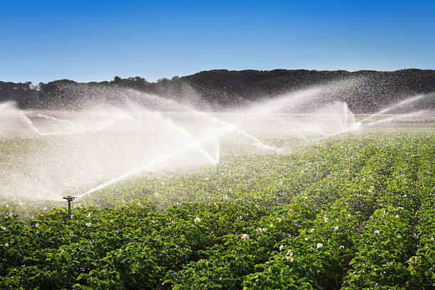

💧 Irrigation Information 💧
⬅ Back to Farm Map

|
Irrigation Details
|
| 🌾 Field |
Field 2 – Wheat Crop |
| 🚿 Irrigation Method |
Sprinkler Irrigation |
| 💦 Water Source |
Borewell |
| 📅 Irrigation Interval |
Every 5 Days |
| ⏱ Duration |
60 Minutes |
| 💧 Water Requirement |
Medium |
| ✅ Last Irrigation |
18 August 2026 |
| 📌 Next Irrigation |
23 August 2026 |
| 📖 Additional Information |
|
Monitor soil moisture regularly and adjust
irrigation timing according to weather conditions.
Proper sprinkler irrigation improves wheat growth,
saves water, and increases crop yield.
|
Smart Agriculture Project
|